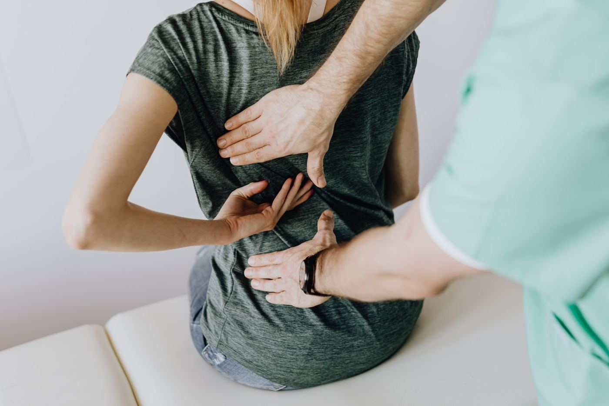

Why Provider Selection Matters for Trauma Patients
Chiropractic is a broad profession. A practitioner who focuses primarily on wellness care — maintenance adjustments, posture correction, ergonomic counseling — and one who specializes in the evaluation and documentation of cervical trauma may both hold the same basic DC degree, but the scope of their clinical experience, their diagnostic capabilities, and the depth of their post-graduate training can differ substantially.
For a patient recovering from a motor vehicle accident, these differences are clinically meaningful. Trauma patients require a specific set of competencies: familiarity with the biomechanical literature on cervical acceleration-deceleration injury, the ability to conduct and document a thorough neurological and orthopedic examination, access to diagnostic tools capable of detecting soft tissue and ligamentous injury, and experience producing clinical records that accurately reflect the complexity of the injury. Not every chiropractic practice is built to deliver all of these.
This article outlines the factors worth considering when selecting a chiropractor following a motor vehicle accident — not to advocate for any specific practice or practitioner, but to give patients the information they need to ask useful questions.
Credentials That Indicate Advanced Trauma Training
The chiropractic profession offers several pathways for postdoctoral specialization in spinal trauma biomechanics, injury documentation, and medicolegal evaluation. These are distinct from general continuing education and represent substantial additional training and examination requirements.
A practitioner pursuing a Diplomate in the American Board of Chiropractic Neurology or a DIANM (Diplomate, International Academy of Neuromusculoskeletal Medicine) through a university postgraduate program has undertaken postdoctoral clinical education at a depth that far exceeds state licensure requirements. These programs involve hundreds of hours of didactic and clinical training, written examinations, and case-based assessment.
State licensure is a floor, not a ceiling. When evaluating a practitioner for post-accident care, looking at postdoctoral credentials gives a clearer picture of where they have invested their clinical development.
Diagnostic Equipment: What Digital Motion X-Ray Changes
Standard static radiographs have an important role in post-accident evaluation — they can identify fractures, dislocations, pathological processes, and gross structural changes that require immediate medical attention. However, static X-rays capture the spine at rest, in positions the patient holds voluntarily, under conditions that differ substantially from functional movement.
Ligamentous instability — abnormal intervertebral translation or angulation produced by incompetent restraining ligaments — is a motion phenomenon. It is visible when the spine moves, and it may not be apparent on any static image. Digital Motion X-Ray (DMX) is a fluoroscopic imaging technology that records the cervical spine in real-time during active movement. Each frame of the resulting video captures the intersegmental relationships at a moment in the range of motion, allowing assessment of whether individual spinal segments are moving within normal limits or producing excessive translation, abnormal coupled motion, or angular deviation that exceeds established normative values.
Clinical significance: A clinical finding of ligamentous instability on DMX can explain cervical pain and neurological symptoms that are otherwise attributed to subjective complaint alone. It provides objective documentation of a structural finding — which has implications for both clinical management and, in injury cases, accurate injury causation analysis.
Not every chiropractic practice has access to Digital Motion X-Ray equipment. When post-accident symptoms suggest possible ligamentous involvement — persistent instability, recurrent subluxation patterns, neurological symptoms without clear disc herniation on MRI — a referral to or consultation with a practitioner who does have DMX access may be clinically appropriate.
Clinical Experience with Injury Cases
Beyond formal credentials, the depth of a practitioner's case experience with motor vehicle injury patients matters for both clinical and documentation reasons. Trauma evaluation requires pattern recognition that develops over time and across cases. A practitioner who regularly works with post-accident patients will have encountered the full range of presentation patterns — from straightforward soft tissue injury to complex multi-level disc pathology with neurological involvement — and will be better equipped to recognize what is atypical and warrants further investigation.
Experience with injury cases also develops the practitioner's competency in documentation. Clinical records for motor vehicle injury cases serve multiple purposes: they guide treatment, they establish a documented injury timeline, and they may be reviewed — sometimes years later — in legal or insurance proceedings. Records that accurately capture objective examination findings, functional limitations, and treatment responses are significantly more useful clinically and legally than records that consist primarily of subjective symptom notation and boilerplate language.
Practitioners who regularly consult on cases, conduct independent examinations, or provide medical record reviews for attorneys and insurers develop a particularly clear perspective on what clinical documentation should contain, because they spend significant professional time evaluating what other practitioners' records do and do not establish.

Documentation Standards: What Thoroughness Looks Like
A thorough initial evaluation following a motor vehicle accident should include several components that are not always present in a general chiropractic intake. These include:
- A detailed accident history capturing vehicle position, direction of impact, delta-v estimate where available, restraint use, headrest position, and awareness of impact prior to collision
- A complete symptom inventory including the onset timing of each symptom — distinguishing immediate from delayed presentation
- Neurological examination including sensory, motor, and reflex assessment of the upper and lower extremities as appropriate to the presenting symptoms
- Orthopedic examination of the cervical, thoracic, and lumbar spine using standardized testing protocols
- Objective range-of-motion measurement, preferably using instrumented assessment rather than visual estimation
- Consideration of imaging — and documentation of the clinical rationale for any imaging ordered or deferred
- A documented impression that connects the examination findings to the reported injury mechanism
The absence of any of these components is not necessarily malpractice, but it does limit what the clinical record can establish. Patients benefit from understanding what a thorough evaluation should include so they can evaluate whether the care they received meets that standard.
Questions to Ask Before Starting Care
A few direct questions before beginning care with a new practitioner can help a patient assess whether that practitioner's experience and capabilities align with their needs following a motor vehicle accident:
- What percentage of your practice involves motor vehicle injury patients?
- Do you have access to Digital Motion X-Ray, or do you have a referral relationship with a practitioner who does?
- What postdoctoral training have you completed in spinal trauma biomechanics or injury assessment?
- What does your initial evaluation for a post-accident patient include?
- Do you have experience producing records that may be reviewed in legal proceedings?
- How do you approach coordination with other treating providers, such as neurologists or pain management physicians?
A practitioner who has substantial experience in this area will answer these questions readily and specifically. Vague answers or unfamiliarity with the questions themselves are informative.
What to Expect at a First Post-Accident Evaluation
A first evaluation following a motor vehicle accident at a trauma-experienced chiropractic practice will typically take longer than a standard new patient appointment — often 60 to 90 minutes. The history alone, if taken properly, requires detailed reconstruction of the accident event and a thorough symptom inventory. The physical examination — including neurological and orthopedic components — takes additional time to conduct and document accurately.
Patients should bring any accident documentation they have available: the police report if one was made, photographs of the vehicles, and any hospital or urgent care records from the day of the accident. These documents help establish an accurate clinical timeline and allow the practitioner to cross-reference the reported mechanism with any findings from earlier evaluations.
Following the examination, the practitioner should be able to discuss their clinical impression — what structures appear to be involved, what additional imaging or referral may be indicated, and what a reasonable treatment plan might look like. This impression should be specific to the examination findings, not a generic treatment prescription applied to all post-accident patients regardless of presentation.
Patients should feel that the evaluation was thorough, that their history was taken seriously, and that the clinical picture being documented reflects what they actually experienced. If any of those elements are absent, seeking a second opinion is a reasonable step.